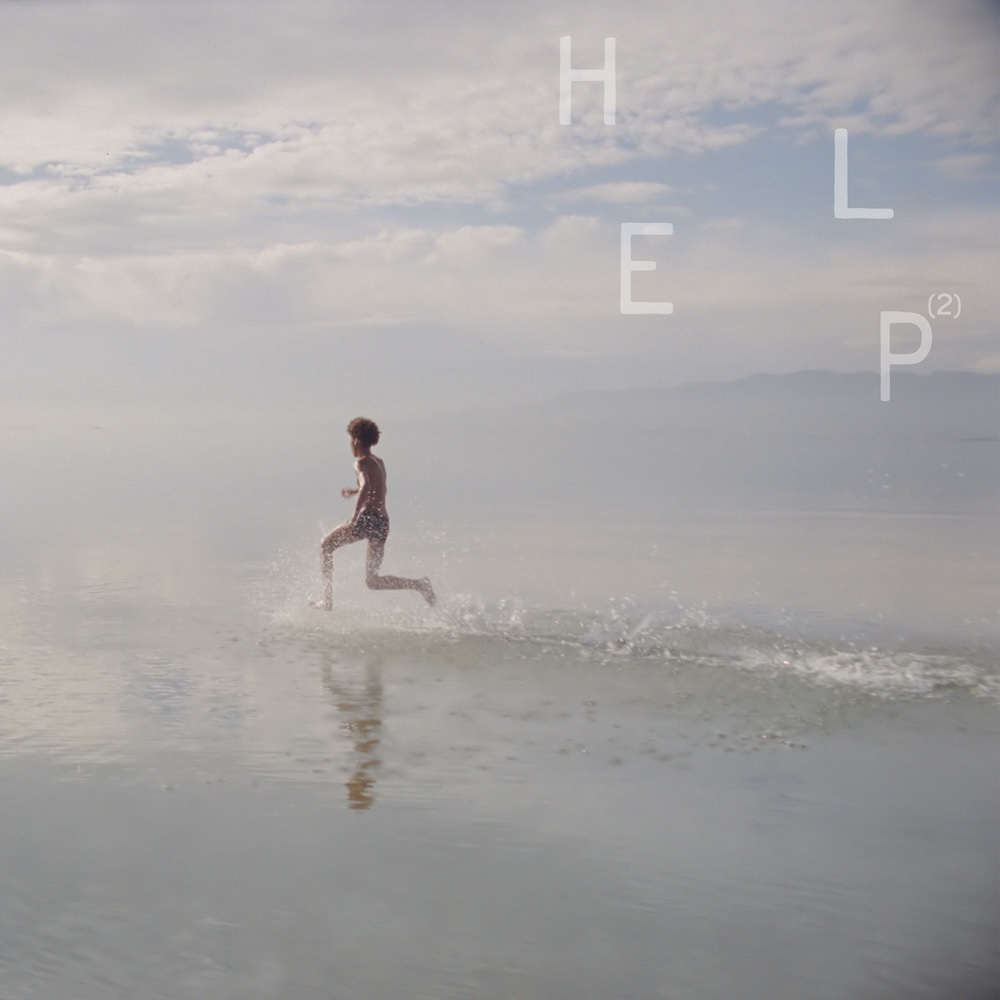
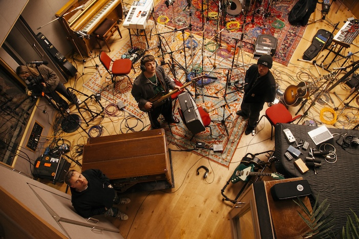

Note
HELP(2)는 기록과 구호 사이의 접점을 탐구합니다. 우리는 소음을 조직하고, 침묵을 배열하며, 그 사이의 긴장을 기록했습니다. 이것은 단순한 리스닝 세션이 아닌, 하나의 공감각적 아카이브입니다.
Beggars Group.
Tracks
- 01Arctic Monkeys — Opening NightLYRICS
- 02Damon Albarn, Grian Chatten & Kae Tempest — FlagsLYRICS
- 03Black Country, New Road — StrangersLYRICS
- 04The Last Dinner Party — Let's Do It Again!LYRICS
- 05Beth Gibbons — Sunday MorningLYRICS
- 06Arooj Aftab & Beck — Lilac WineLYRICS
- 07King Krule — The 343 LoopLYRICS
- 08Depeche Mode — Universal SoldierLYRICS
- 09Ezra Collective & Greentea Peng — HelicoptersLYRICS
- 10Arlo Parks — Nothing I Could HideLYRICS
- 11English Teacher & Graham Coxon — ParasiteLYRICS
- 12Beabadoobee — Say YesLYRICS
- 13Big Thief — Relive, RedieLYRICS
- 14Fontaines D.C. — Black Boys On MopedsLYRICS
- 15Cameron Winter — WarningLYRICS
- 16Young Fathers — Don't Fight The YoungLYRICS
- 17Pulp — Begging For ChangeLYRICS
- 18Sampha — NabooLYRICS
- 19Wet Leg — ObviousLYRICS
- 20Foals — When The War Is Finally DoneLYRICS
- 21Bat For Lashes — Carried My GirlLYRICS
- 22Anna Calvi, Dove Ellis, Ellie Rowsell & Nilüfer Yanya — Sunday LightLYRICS
- 23Olivia Rodrigo — The Book of LoveLYRICS
Documentation

* 본 마이크로사이트는 Beggars Group에서 주최하는 HELP(2) 리스닝 파티를 위해 제작되었습니다.
* 파티 중 원활한 이용을 위해 모바일 환경에 최적화되어 있습니다.